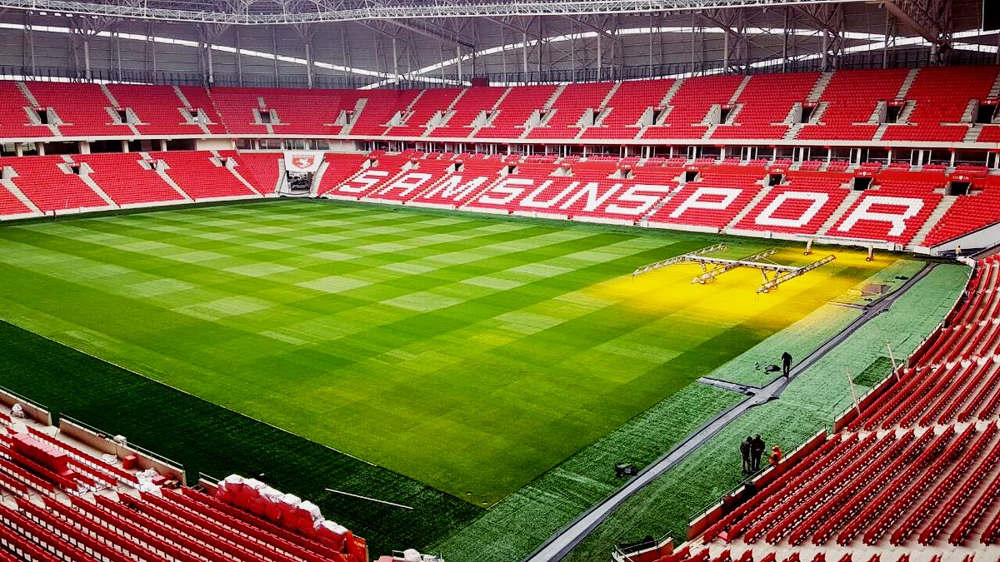

Armamızın Gururu
Samsunspor arması, Türk futbolunda eşi benzeri olmayan bir gururu taşır. Armamızın merkezinde, Milli Mücadele'nin başlangıcını simgeleyen ve Samsun'un simgesi olan Onur Anıtı (Şahlanmış Atatürk Heykeli) yer alır. Bu detay, takımımızın sadece bir spor kulübü değil, aynı zamanda tarihi bir mirası temsil ettiğinin en büyük göstergesidir.
20 Ocak 1989: Kara Gün
Samsunspor kafilesi, Malatyaspor deplasmanına giderken Havza ilçesinde elim bir trafik kazası geçirmiştir. Bu feci kazada Teknik Direktör Nuri Asan, futbolcularımız Muzaffer Badalıoğlu, Mete Adanır, Zoran Tomić ve otobüs şoförü Asım Özkan hayatını kaybetmiştir.
Bu trajik olayın ardından Kırmızı-Beyaz olan renklerimize, kaybettiğimiz değerlerimizin anısına Siyah rengi de eklenmiştir. Ruhları şad olsun.
Avrupa'da Samsunspor Fırtınası

Bu sezon takımımız, hem ligde gösterdiği istikrarlı performans hem de Avrupa kupalarındaki destansı yürüyüşüyle taraflı tarafsız herkesin takdirini topladı. Kırmızı-Şimşekler, güçlü rakiplerini tek tek dize getirerek Avrupa sahnesinde Karadeniz fırtınası estirdi ve şehrin adını tüm Avrupa'ya bir kez daha ezberletti.
Gururla Söylüyoruz (Marşımız)
Mabedimiz: Yeni 19 Mayıs Stadyumu
- 📍 Konum: Tekkeköy / Samsun
- 🏟️ Kapasite: 33.919
- ✨ Açılış: 2017
- 🔥 Atmosfer: Türkiye'nin en ateşli ve coşkulu taraftar gruplarından birine ev sahipliği yapar.